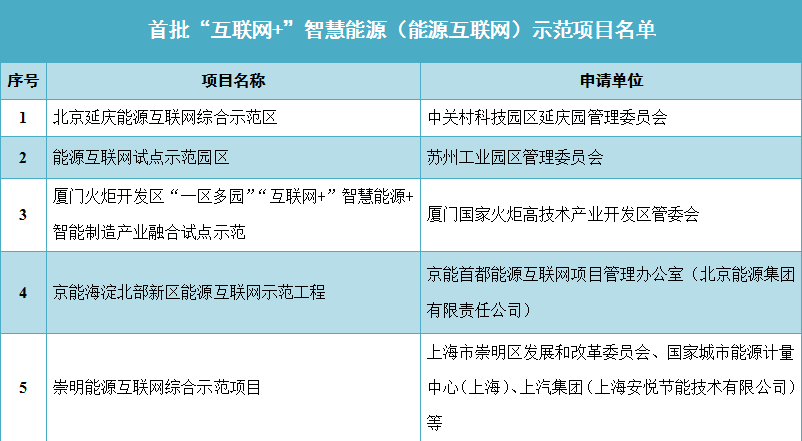
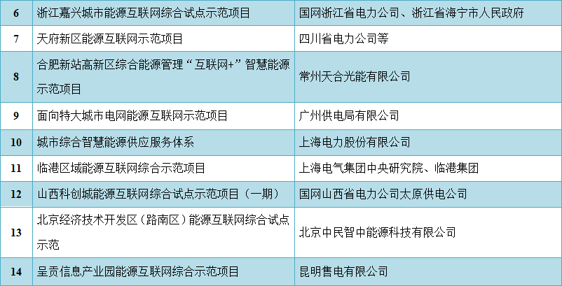
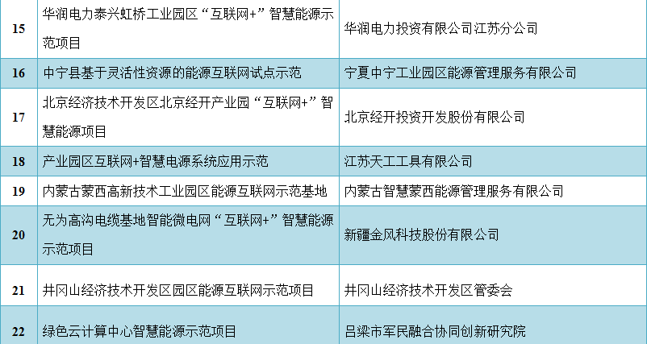
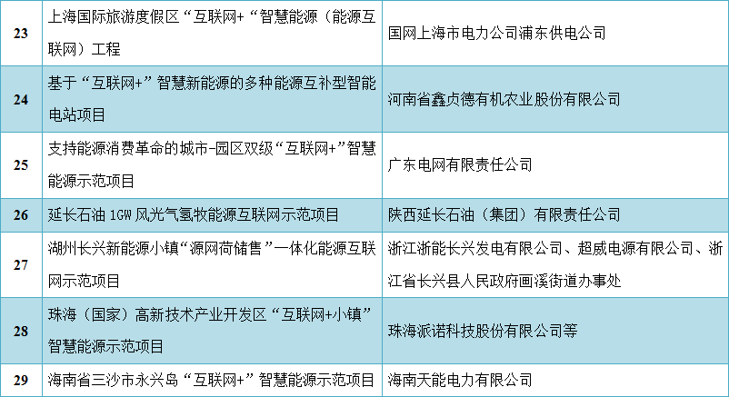
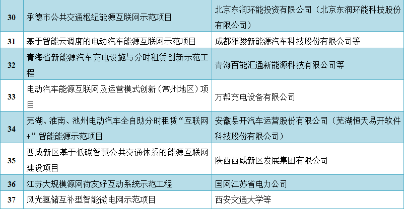
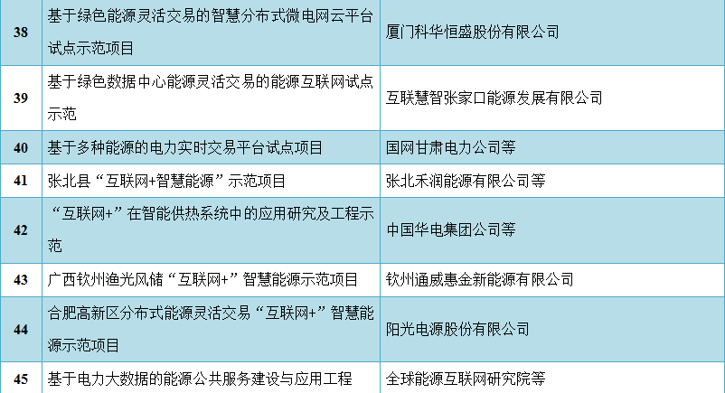
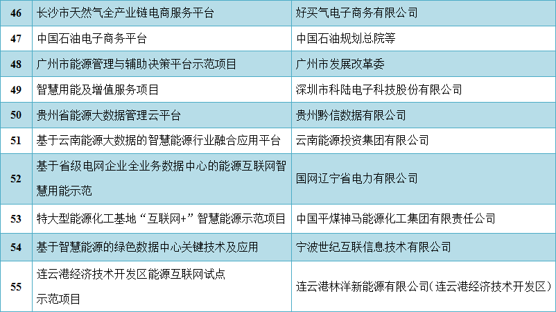

日前国家能源局官网公布了首批“互联网+”智慧能源(能源互联网)示范项目共55个。其中城市能源互联网综合示范项目12个、园区能源互联网综合示范项目12个、其它及跨地区多能协同示范项目5个、基于电动汽车的能源互联网示范项目6个、基于灵活性资源的能源互联网示范项目2个、基于绿色能源灵活交易的能源互联网示范项目3个、基于行业融合的能源互联网示范项目4个、能源大数据与第三方服务示范项目8个、智能化能源基础设施示范项目3个。
详情如下：
国家能源局关于公布首批“互联网+”智慧能源(能源互联网)示范项目的通知
国能发科技[2017]20号
各省、自治区、直辖市及计划单列市、新疆生产建设兵团发展改革委(能源局)、各有关能源企业：
为落实《关于推进“互联网+”智慧能源发展的指导意见》(发改能源〔2016〕392号)、《国家能源局关于组织实施“互联网+”智慧能源(能源互联网)示范项目的通知》(国能科技〔2016〕200号)等有关要求，我局组织开展了“互联网+”智慧能源(能源互联网)示范项目的申报和评选工作。经过专家评审、公示等工作程序，确定了首批示范项目。现将有关事项通知如下：
一、首批“互联网+”智慧能源(能源互联网)示范项目共55个。其中城市能源互联网综合示范项目12个、园区能源互联网综合示范项目12个、其它及跨地区多能协同示范项目5个、基于电动汽车的能源互联网示范项目6个、基于灵活性资源的能源互联网示范项目2个、基于绿色能源灵活交易的能源互联网示范项目3个、基于行业融合的能源互联网示范项目4个、能源大数据与第三方服务示范项目8个、智能化能源基础设施示范项目3个(详见附件)。
二、项目实施单位应科学编制实施方案、合理选择运作方式，严格遵循项目基本建设程序，建设内容应符合相应行业管理要求，保质保量推进示范项目建设。首批示范项目原则上应于2017年8月底前开工，并于2018年底前建成。对于未能按时开工或建成的项目，应及时向省级能源主管部门提出延期申请，对无故延期或不申报延期的予以取消。
三、省级能源主管部门应做好本地区示范项目的组织协调和监督管理工作，优化和简化项目核准程序，提供一站式服务，及时跟踪项目进展情况，协助解决项目实施中的问题，并及时向有关单位报告，确保示范项目建设进度和质量。项目建成后，项目单位应及时向省级能源主管部门提出验收申请，省级能源主管部门委托第三方专业机构验收通过后，组织编制项目验收报告，并上报国家能源局。
四、国家能源局、国家能源局派出能源监管机构和省级能源主管部门将组织社会各界专业力量对示范项目进行综合评议并持续辅导，共同保证项目示范引领作用的充分发挥。对于发生重大变化或后期运行不符合示范项目技术、经济要求的，应责令项目单位限期整改，整改后仍不符合要求的，不再作为示范项目推广，不再享受相关政策。
五、省级能源主管部门应组织有关分布式能源、电网、气网、热力管网企业做好示范项目配套工程建设规划，适时开展配套工程建设。研究制定示范项目并网运行方案，实现“公平、开放、无歧视”接入，实施公平调度。积极协调示范项目与农业、工业、交通、市政、商业、体育、教育等不同行业的交叉融合问题。
六、省级能源主管部门可结合本地实际制定和协调支持示范项目建设和运行的土地、价格、市场、资金、税费、科技、人才等方面的政策措施，协调政策落实中的重大问题。将示范项目同步纳入电力、油气等专项改革试点工作中，优先执行国家有关能源灵活价格政策、激励政策和改革措施。示范项目优先使用国家能源规划所确定的各省(区、市)火电装机容量、可再生能源配额、碳交易配额、可再生能源补贴等指标额度。
附件：首批“互联网+”智慧能源(能源互联网)示范项目名单
国家能源局
2017年6月28日
      